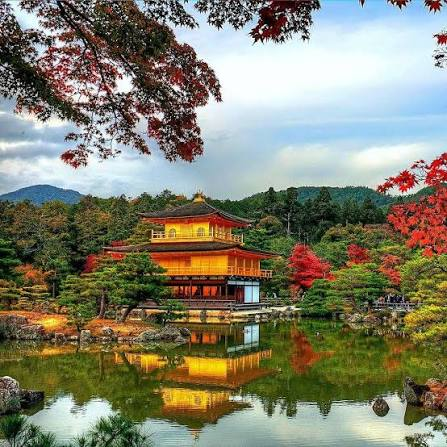

Загальна характеристика

Кіото — місто на острові Хонсю, яке понад тисячу років (з 794 по 1869 рік) було столицею Японії та резиденцією імператорів. Сьогодні воно є головним культурним і духовним осередком країни.
Чому я обрав це місто
Я обрав Кіото за його унікальну гармонію між людиною, архітектурою та природою. На відміну від ультрасучасного Токіо, Кіото дозволило зберегти автентичний дух давньої Японії, де кожен сад чи дерев'яний храм створений для споглядання та спокою.
Цікаві факти про Кіото
- У місті налічується близько 1600 буддійських храмів та 400 синтоїстських святилищ.
- Сімнадцять історичних об'єктів Кіото об'єднані у список Світової спадщини ЮНЕСКО.
- Саме в Кіото зародилася та досі зберігається традиційна культура чайних церемоній.
Визначні місця, які варто відвідати
- Кінкаку-дзі (Золотий павільйон), вкритий листами чистого золота.
- Святилище Фусімі Інарі з тисячами червоних воріт торії.
- Бамбуковий гай Арасіяма на західній околиці міста.
- Історичний квартал Гіон з традиційною дерев'яною забудовою.
Особиста оцінка та додаткові ресурси
Моя оцінка: 9.8 / 10
Дізнатися більше про це місто можна тут: Кіото у Вікіпедії.